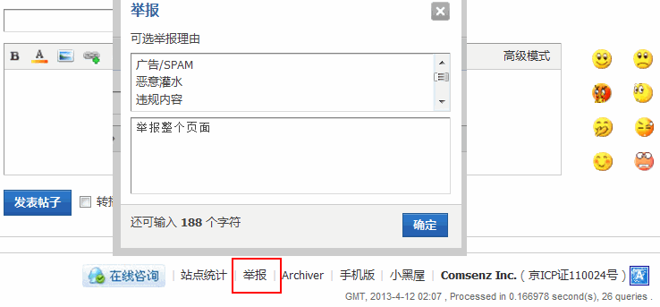
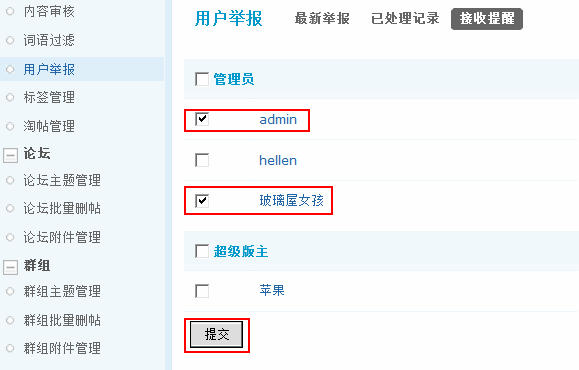

3.9. 用户举报¶
用户举报
网站每天都会有大量的用户来发新帖，浏览，回帖，等操作，而管理人员有限，难免有管理不到的地方。
用户举报的功能可以帮助站长来加强网站的管理，用户之间互相监督，同时也是站长认识用户的一个窗口，通过用户的举报，可以对用户进行奖励的操作，当然也有部分用户恶意捣乱，举报的内容并不是非法内容，也可以对这些用户进行惩罚，比如扣除一定数值的金钱等，下面主要为大家讲解举报功能的使用和管理操作。
操作路径：【后台】=>【内容】=>【用户举报】
一、最新举报
这里列出了用户在站点中最新的举报，包括页面地址、举报理由、举报人、举报时间等，可以根据举报真实情况，给举报者加减积分。

1)会员如何举报
在浏览网站时，在每个页面的右下脚都有“举报”的链接，如图：
也可以在访问某个帖子时，对该帖子内容进行举报操作，如图：
举报成功后，举报的相关信息就会显示在最新举报中。
2)如何删除举报
勾选页面地址前面的复选框，然后点击“删除”可以删除单个举报。
勾选全选前面的复选框可以批量删除。
3)设置用户举报奖惩使用的积分
点击该页面右上角的“设置用户举报奖惩使用的积分”链接，我们可以看到“交易积分设置”在这里修改交易积分即可。
二、已处理记录
在最新举报页面勾选页面地址前面的复选框，然后点击“处理选中”举报信息即进入该页面。
可以将已经处理过的记录删除。
三、接收提醒
选择接收提醒的管理人员，选中后，当用户举报时接收提醒的管理人员访问站点的时候会有新的提醒。
当有会员举报信息，“admin” 和“玻璃屋女孩”访问站点的时候，页头会有新提醒。